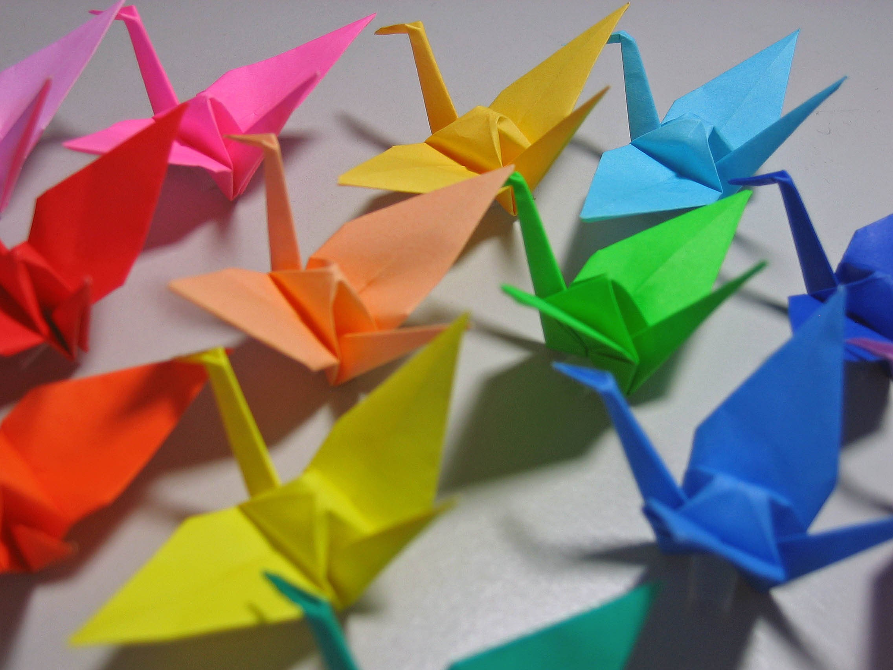

Оригами
Орига́ми (яп. 折り紙, букв.: «сложенная бумага») — вид декоративно-прикладного искусства; японское искусство складывания фигурок из бумаги.
Искусство оригами своими корнями уходит в Древний Китай, где и была изобретена бумага. Первоначально оригами использовалось в религиозных обрядах. Долгое время этот вид искусства был доступен только представителям высших сословий, где признаком хорошего тона было владение техникой складывания из бумаги.
Классическое оригами складывается из квадратного листа бумаги.
Существует определённый набор условных знаков, достаточных для того, чтобы зарисовать схему складывания даже самого сложного изделия. Бо́льшая часть условных знаков была введена в практику в 1954 г. известным японским мастером Акирой Ёсидзавой (1911—2005).
Классическое оригами предписывает использование одного листа бумаги без применения ножниц. При этом часто для шейпинга (shaping) сложной модели, то есть придания ей формы, или для её консервации используется пропитка исходного листа клеевыми составами, содержащими метилцеллюлозу или ПВА.
История оригами
Существует множество версий происхождения оригами. Одно можно сказать наверняка — по большей части это искусство развивалось в Японии. Оригами стало значительной частью японских церемоний уже к началу периода Хэйан. Самураи обменивались подарками, украшенными носи, своего рода символами удачи, сложенными из бумажных лент. Сложенные из бумаги бабочки использовались во время празднования свадеб синто и представляли жениха и невесту.
Однако, независимые традиции складывания из бумаги, хоть и не столь развитые, как в Японии, существовали среди прочего в Китае, Корее, Германии и Испании. Европейские традиции складывания из бумаги менее документированы, чем восточные, однако известно, что технология изготовления бумаги достигла арабов около VIII века н. э., мавры принесли бумагу в Испанию около XI века. С этого времени в Испании и с XV века в Германии начало развиваться складывание бумаги[2]. Как и в Японии, в Европе складывание из бумаги тоже было частью церемоний. Обычай складывать особым образом свидетельства о крещении был популярен в центральной Европе в XVII—XVIII вв. К XVII веку в Европе существовал целый ряд традиционных моделей: Испанская Пахарита, шляпы, лодки и домики. В начале XIX века Фридрих Фрёбель сделал огромный вклад в развитие складывания из бумаги, предложив это занятие в качестве обучающего в детских садах для развития детской моторики.
В 1960-х с введением в обиход системы условных обозначений Ёсидзавы-Рандлетта искусство оригами стало распространяться по всему миру. Примерно в те же годы получило распространение модульное оригами. В настоящий момент оригами превратилось по-настоящему в международное искусство.
Виды и техники оригами
В оригами используется единая система универсальных знаков, позволяющая записать процесс складывания любой модели в виде серии чертежей. Она была придумана лишь в середине XX века известным японским мастером оригами Акирой Ёсидзавой и позволила оригами распространиться по всему миру.
Модульное оригами
Одной из популярных разновидностей оригами является модульное оригами, в котором целая фигура собирается из многих одинаковых частей (модулей). Каждый модуль складывается по правилам классического оригами из одного листа бумаги, а затем модули соединяются путём вкладывания их друг в друга. Появляющаяся при этом сила трения не даёт конструкции распасться. В технике модульного оригами часто делаются: коробочки, плоские и объемные звезды, объекты шарообразной формы, которые в России получили не совсем точное название кусудама, так как первоначально кусудама предполагала сшивание модулей в шар.
Простое оригами
Простое оригами — стиль оригами, придуманный британским оригамистом Джоном Смитом. Простое оригами ограничено использованием только складок горой и долиной. Целью данного стиля является облегчение занятий неопытным оригамистам, а также людям с ограниченными двигательными навыками. Данное выше ограничение означает невозможность многих (но не всех) сложных приёмов, привычных для обычного оригами, что вынуждает к разработке новых методов, дающих сходные эффекты.
Складывание по паттерну
Паттерн (англ. crease pattern; CP; устар. развёртка) — один из видов диаграмм оригами, представляющий собой чертёж, на котором изображены все складки базовой формы модели. Далее остается только придать ей форму согласно фотографии автора. Складывание по паттерну сложнее складывания по традиционной схеме, однако, данный метод даёт не просто информацию, как сложить модель, но и как она была придумана. Дело в том, что паттерны используются при разработке новых моделей оригами. Последнее также делает очевидным факт отсутствия для некоторых моделей иных диаграмм, кроме паттерна.
Мокрое складывание
Мокрое складывание — техника складывания, разработанная Акирой Ёсидзавой, использует смоченную водой бумагу для придания фигуркам плавности линий, выразительности, а также жесткости. Особенно актуален данный метод для таких негеометричных объектов, как фигурки животных и цветов. В этом случае они выглядят намного естественней и ближе к оригиналу.
Не всякая бумага подходит для мокрого складывания, а лишь та, в которую при производстве добавляют водорастворимый клей для скрепления волокон. Как правило, данным свойством обладают плотные сорта бумаги.
Бумага и другие материалы
Хотя для складывания подходит практически любой листовой материал, выбор последнего очень сильно влияет как на процесс складывания, так и на окончательный вид модели.
Для несложных моделей, таких как журавлик или водяная бомбочка, подходит обычная бумага для принтера 70-90 г/м². Более тяжёлые сорта бумаги (более 100 г/м²) могут быть использованы для мокрого складывания.
Существует также специальная бумага для оригами, часто называемая «ками» (бумага по-японски), которая продаётся сразу в виде квадратов, чьи размеры по стороне меняются от 2,5 см до 25 см и более. Обычно одна сторона такой бумаги белая, а другая — цветная, но встречаются и двуцветные разновидности и разновидности с орнаментом. Бумага для оригами чуть легче принтерной, что делает её подходящей для широкого класса фигурок.
Фольгированная бумага, или как её часто называют «сэндвич», представляет тонкий лист фольги, склеенный с тонким листом бумаги, иногда фольга оклеивается бумагой с обеих сторон. Этот материал обладает тем немаловажным преимуществом, что он очень хорошо держит форму и позволяет проработать мелкие детали.
В самой Японии в качестве материала для оригами господствует тип бумаги под названием васи (яп. 和紙). Васи жёстче обыкновенной бумаги, сделанной из древесной массы и используется во многих традиционных искусствах. Васи обычно делается из волокон коры Edgeworthia papyrifera, но также может производиться из бамбука, пеньки, риса и пшеницы.
Формат бумаги
Чаще всего для оригами используют квадратные листы бумаги, но допускается и применение других форматов. Например, прямоугольные листы (часто формата А), треугольники, пятиугольники, шести- и восьмиугольники, круги.
Математика в оригами
Практика и изучение оригами касаются некоторых областей математики. Например, проблема плоского изгиба (возможно ли образец складки согнуть в двумерную модель) была объектом серьёзного математического исследования.
Примечательно, что бумага показывает нулевую гауссову кривизну во всех точках поверхности, и только сгибы представляют собой линии нулевой кривизны. Но кривизна вдоль поверхности неизогнутой складки на влажной бумаге или складки ногтем не удовлетворяют этому условию.
То, что составление плоской модели из образца складки является NP-полным, было доказано Маршаллом Берном и Барри Хайесом.
Проблема твёрдого оригами имеет некоторое практическое значение. Она формулируется так: если заменить бумагу листом металла и использовать стержни вместо линий складок, то возможно ли получить соответствующую модель? Примером решения этой проблемы являются твёрдые сгибы Миуры, используемые для развёртывания массивов солнечных батарей для космических спутников.
Техническое оригами
Техническое оригами, известное на японском как origami sekkei (яп. 折り紙設計) , представляет собой подход к дизайну оригами, в котором модель задумана как искусственный паттерн, а не разработана методом проб и ошибок. С развитием математики оригами базовая структура новой модели оригами может быть теоретически начерчена на бумаге ещё до фактического складывания модели. Этот метод оригами был разработан Робертом Лангом, Мегуро Тошиюки и другими и позволяет создавать чрезвычайно сложные модели с несколькими конечностями, такие как многоногие насекомые, человеческие фигуры с полным набором пальцев рук и ног и тому подобное.
Паттерн — это набор складок, необходимых для формирования структуры модели. Не очевидное наблюдение, что когда дизайнеры оригами придумывают паттерн для нового дизайна, большинство мелких складок относительно неважны и добавляются только к завершению модели. Что более важно, так это распределение областей на бумаге и то, как они соотносятся со структурой проектируемого объекта. Открывая сложенную модель, вы можете наблюдать за составляющими её структурами; изучение этих структур привело к ряду подходов к дизайну, ориентированных на паттерны.
Схема размещения называется «упаковка по кругу» или «упаковка по многоугольнику». Используя алгоритмы оптимизации, можно вычислить фигуру упаковки кругов для любого одноосного основания произвольной сложности. После того, как эта цифра рассчитана, можно добавить складки, которые затем используются для получения базовой структуры. Это не уникальный математический процесс, поэтому два рисунка могут иметь одинаковую упаковку кругов и разные структуры паттерна.
Поскольку круг охватывает максимальную площадь для данного периметра, упаковка кругов обеспечивает максимальную эффективность использования бумаги. Однако для решения проблемы упаковки можно использовать и другие многоугольные формы. Использование многоугольных форм, отличных от кругов, часто мотивируется желанием найти легко обнаруживаемые складки (например, кратные 22,5 градусам) и, следовательно, более лёгкую последовательность складывания. Одним из популярных ответвлений метода упаковки кругов является гофрировка коробки, когда вместо кругов используются квадраты. В результате узор сгиба, возникающий при использовании этого метода, содержит только углы 45 и 90 градусов, что часто обеспечивает более прямую последовательность складывания.
Компьютерные программы, связанные с оригами
Был разработан ряд компьютерных пособий для оригами, таких как TreeMaker и Oripa. TreeMaker позволяет конструировать новые основы оригами для специальных целей, а Oripa пытается вычислить сложенную форму по образцу рисунку складок.
Этика и авторское право
Авторское право на дизайн оригами и использование моделей становится все более важной проблемой в сообществе оригами, поскольку Интернет очень упростил продажу и распространение пиратских рисунков. Считается хорошим этикетом всегда указывать оригинального художника и источник при демонстрации моделей оригами. Утверждается, что все коммерческие права на дизайны и модели обычно сохраняются за художниками оригами; однако степень, в которой это может быть исполнено, оспаривается. Согласно такой точке зрения, человек, который складывает модель с использованием законно полученного дизайна, может публично демонстрировать модель, если такие права не были специально защищены, в то время как складывание дизайна за деньги или коммерческое использование фотографии, например, потребует согласия художника. Группа авторов и создателей оригами была создана, чтобы представлять интересы художников-оригами по авторскому праву и облегчать запросы на разрешение использования моделей.
Однако суд Японии постановил, что метод складывания модели оригами «содержит идею, а не творческое выражение, и поэтому не защищён законом об авторском праве». Кроме того, суд заявил, что «метод складывания оригами является общественным достоянием; нельзя не использовать одни и те же складки или одни и те же стрелки, чтобы указать направление, в котором нужно складывать бумагу». Следовательно, законно перерисовывать инструкции сворачивания модели другого автора, даже если перерисованные инструкции имеют сходство с исходными, при условии, что эти сходства носят «функциональный характер». Перерисованные инструкции могут быть опубликованы (и даже проданы) без какого-либо разрешения от первоначального автора. Решение Японии, возможно, согласуется с Управлением по авторскому праву США, которое утверждает, что «авторское право не защищает идеи, концепции, системы или методы выполнения каких-либо действий».